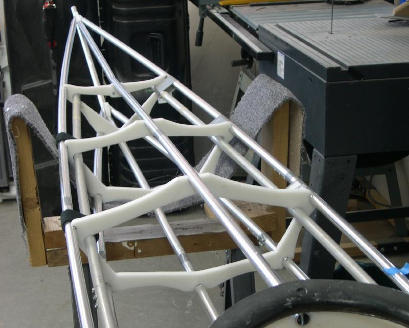

| Forward Deckridge | Menu Previous Page Next Page |
|
 Forward Deckridge Stringer - On the Sea Ranger, the forward deck stringer tube is bent at cross section 1 for attachment to the gunwale/deckridge plate. The forward deck stringer is 92in long. It is made of two sections with the forward 56in section being connected to the 36in rear section with a 6in insert. The insert is riveted to the shorter section. The forward deck stringer is flush with cross section 4. |
|